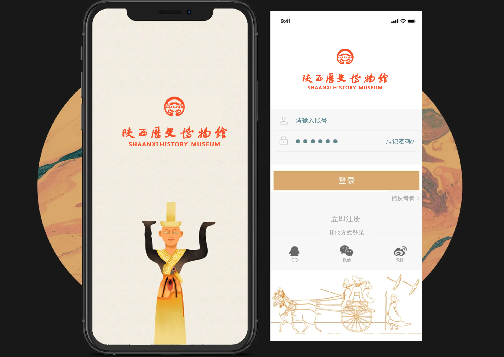
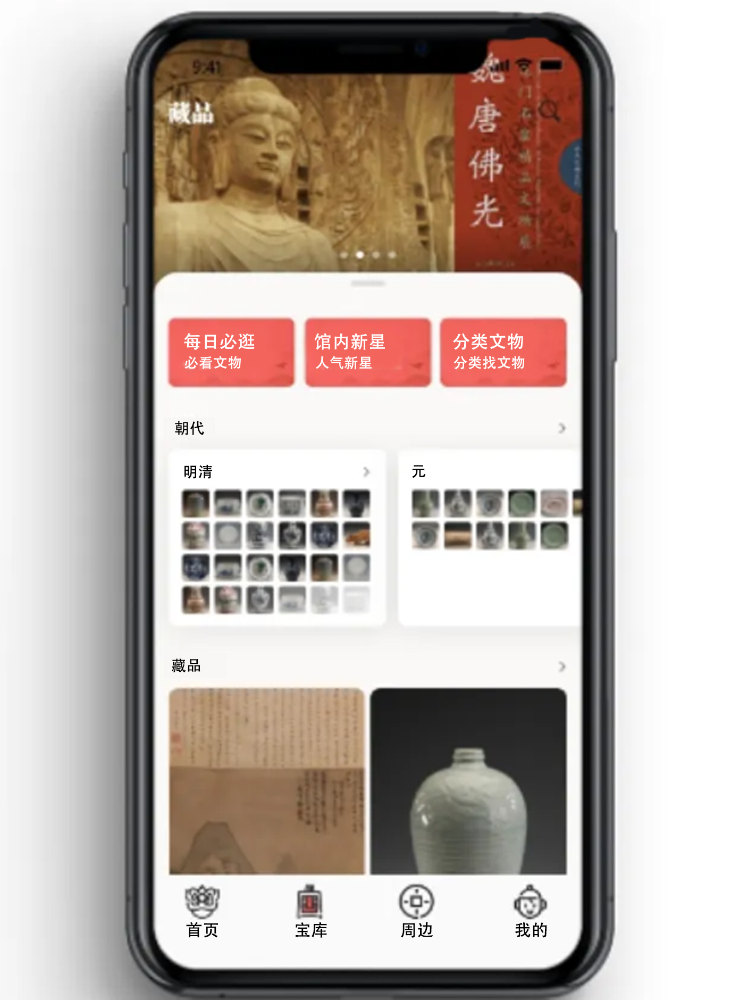

This section presents the design of a museum-focused app, organized into several modules. Its main functions include museum introductions, cultural relics categorized by pavilion, ticket booking, content explanations, map navigation, highlights of the museum's collection, online purchasing of cultural and creative products, and customer service. The design addresses common challenges faced by visitors, such as the absence of on-site staff when assistance is needed. By incorporating these features, the app goes beyond traditional explanation-based functionalities, offering a more comprehensive and immersive museum experience.
Login and Registration Page
The login and registration page is simple and clear, providing a pleasant experience for users.

Login or Register
home page
Products designed with emotional appeal make users feel that the product has warmth and emotion, thereby increasing user stickiness.
The main functions of the homepage include all exhibitions, ticket reservations, VR reality shows, and tour services.
home page
Online ticket purchase
By purchasing tickets online, users can avoid long queues at ticket offices or venues, saving time and reducing stress.
Online ticket purchase
treasure-house
The launch of online cloud exhibitions further strengthens the function of online public cultural services.

treasure-house
Map Guide
It provides users with a more intuitive and seamless way to explore and navigate within the app, improving overall satisfaction and engagement.
Map Guide
Cultural Relics Explanation
By providing detailed explanations and historical context, the app can turn a simple visit to a museum or historical site into a rich, educational experience. Users can learn more about the artifacts they are viewing, deepening their understanding and appreciation of history and culture.
Cultural Relics Explanation
Personal Center
Users can customize their personal center with features like avatars, nicknames, and interest preferences, enabling a more tailored content and service delivery.
Personal Center
Results show
Through this platform, we aim to enhance communication and interaction between museums and the general public, allowing more people to approach and participate in museums.
Results show